Royal Society of Players 这些手工制作的卡片由世界著名的扑克牌艺术家和设计师 Oban Jones 设计，代表多达 7 种不同的稀有特性（包括特别版金色、彩虹色、加密和其他独特设计，向我们的
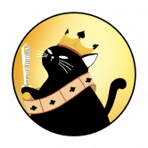 RoyalCatsLotto 什么是皇家猫乐透？ Royal Cats Lotto 是一个基于区块链的在线彩票平台，使用智能合约进行每次转让和交易，以确保所有客户的安全和责任。 累积奖金等级：所有 4 张牌
RoyalPay DApp RoyalPay 是币安智能链上的一种自动质押和自动复利的去中心化协议，为投资者提供 480,810.4% 的年收益率。 该合约使用反倾销盾牌来保护您的投资和协议的可持续性。防止泵
Royalswap Royalswap 是第三代永续耕作机制，可提供可持续且可盈利的产量。 Royalswap DAPP技术分析 Royalswap dApp 是基于协议构建的 DeFi 类别的加密资产。现在，根据用户数量，它在一般 dApp 排
RSK Swap RSK 交换是适用于 RSK 网络的 Uniswap 协议的一个分支。它是用于自动提供流动性的完全去中心化协议。该站点不是 Uniswap 协议的官方站点。一个简单的形式化方程为成千上万
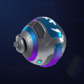 RTFKT Capsule Space Drip 1.2 RTFKT 在 2020 年 1 月 COVID 时代初期由三个朋友组成，诞生于元界，这已经定义了它的感觉。 RTFKT 是一个非常不拘一格、由创造者主导的组织。 RTFKT 使用最新的游戏引擎、NF
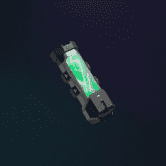 RTFKT SKIN VIAL: EVO X RTFKT SKIN VIAL：EVO X NFT 在过去 7 天内售出 117 次。 RTFKT SKIN VIAL: EVO X 的总销售额为 $90.13k。一个 RTFKT SKIN VIAL: EVO X NFT 的平均价格为 770.4 美元。共有 5,662 个 RTFKT SKIN VIAL: EVO X 拥
RTFKT x Nike Dunk Genesis CRYPTOKICKS RTFKT 与 Nike 携手推出首款 RTFKT x NIKE CRYPTOKICKS NFT：由 DRM OS 和 Skin Vial Tech 提供支持的 RTFKT X NIKE DUNK GENESIS CRYPTOKICKS 运动鞋。 请阅读：由于区块链在购买时处理更改的速度不够快，因此不要购买/
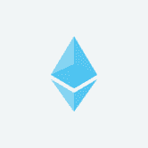 Rttip [公测] Rttip 是一个 ETH 打赏 dapps 来影响你的推文。您可以通过创建以 ETH 作为奖励的 RT 扩散请求或转发请求的推文来获得 ETH。需要事先登录 Rttip 才能接收 ETH。如
Rubicon Rubicon 正在建立世界秩序手册。我们的使命是开放、加速和民主化全球金融市场。 Rubicon v1 是建立在以太坊领先的第 2 层 (L2) 网络上的订单簿协议。您现在可以在 Rubicon 应用程
Rubik Farm 基于币安智能链的最实惠和盈利的 Yieldfarm 具有通货紧缩的代币模型，最大供应量为 400,000 RUBIK 代币。 在审查了几种单产农业模型后，我们决定采用低排放率、低供应、分层
Rug Pull Game 具有 3 个简单规则的 Polygon 区块链游戏： 用 1 MATIC 抽取奖励池。 等待 30 个街区。 如果没有其他人抽水，您可以拉地毯并获得奖励池💰 拉地毯游戏由 Piotr Wilczek 创建。 该项目是
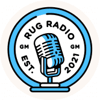 RugRadio Genesis NFT RUG RADIO 是第一个完全去中心化的媒体平台。 这是什么意思？ 这意味着我们的会员和我们的房东拥有您使用的平台。 它为什么如此重要？ 因为我们需要拥有叙述和模
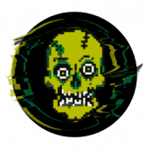 RugZombie 欢迎来到 RugZombie ($ZMBE)，这是币安智能链上第一个以复活价值为重点的加密货币。 虽然 $ZMBE 无法阻止或预测公众接触“拉扯”或“被骗”的代币，但我们的
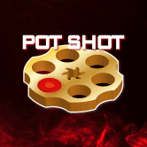 Ruletka Pot Shot 什么是 Ruletka Pot Shot？ Pot Shot 是第一款基于 Ruletka 代币 1 比 6 机会销毁机制开发的自动化游戏。 这些烧伤被称为“SHOTS 要发送照片，您必须将以太坊钱包连接到
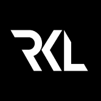 Rumble Kong League Rumble Kong League 是一种具有竞争力的 3 对 3 篮球体验，将“玩赢”功能与 NFT 收藏机制相结合，使用户能够通过 NFT 以引人入胜的方式进行竞争。 使用一组独特的 10,000 个 ERC-721 令牌
Run For Life Run For Life 是一个 Web3 生活方式应用程序，用于通过社交和金融元素锻炼和赚钱。 您可以在每天步行、慢跑、跑步和获得真正的健康时赚取加密货币。 Run For Life 旨在推动
Runeguard Runeguard 是一种利用 NFT 和区块链技术力量的独特多方面游戏体验。玩家在与朋友一起探索类型丰富的 MMO 集换式卡牌游戏的同时进行交易、战斗、赚取 NFT 和代币。 玩家将
Rust Cup Game 购买独特的赛车作为 NFT。 在每个人为自己模式中寻找 1x1 比赛或 4 人比赛的对手。 每场比赛都在一个独特的赛道上进行，其特征是随机生成的。 Rustcupgame 是一款间接
RVL.FINANCE VIVAL (VIV) 是 REVIVAL DeFi 生态系统的治理代币，旨在奖励持有者，同时支持扩展到更广泛的中心化加密领域。 治理代币的采用使 REVIVAL 团队能够创建一种用于中心化交易所的产品
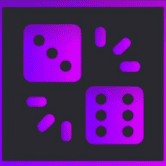 RXCgames RXC games 是一个游戏平台，它使用基于我们平台的原生代币 Binance Smart Chain 构建的 RXC games (RXCG) 代币。最初是在游戏之夜进行的友好赌注，后来一直是一个想法，最后变成了最新的
Satoshi Girl Racing NFT 拥有 NFT 可让您完全访问 Satoshi Girl 赛车游戏。 * 拥有 8 个 NFT 即可获得鲸鱼身份！ 50% 购买代币折扣！并且还可以从代币中获得 50% 以上的比特币奖励！ *通过铸造至少一个
Satoshi Monsters 我们是玩防御游戏长大的，考虑到这一点，我们想创造出具有令人难以置信的游戏玩法的东西，并添加强大的区块链技术。 Satashi Monsters(SSM) 就是这样诞生的，这一切都始于
Satoshibles Satoshibles 是比特币爱好者的 NFT。使用 192 个手绘属性生成的 5000 个算法生成的加密收藏 NFT 的集合，分布在 9 个特征上。每一件都是独一无二的，稀有程度不一。 Satoshibles 是第
Saturn Network Saturn Network 是用于交易以太坊的去中心化交易所以太坊经典代币。 Saturn Network 无需审查，具有自动代币自上市和钱包到钱包交易功能，无需存款或取款。所有支付的交易费用
ScalePunks 我们很高兴向您展示 - ScalePunks，这是在 Everscale 区块链上为您带来的第一个 NFT 朋克系列！ ScalePunks 是 10000 个独特朋克的集合，其中包括 9 个外星人、24 个猿猴
Scape Forum Scape Forum 是 Seascape Network 的第四款模块化 DeFi 游戏。在这款罗马主题的游戏中，玩家可以将 5 个更高代的 Scapes 组合成更早的一代和可能更高质量的 Scapes。获取更早更强大
ScareCrow Finance xxxxxxxxxx ScareCrow 是 Fantom 上的一个新的 DeFi 项目，具有通货紧缩的代币模型。 ScareCrow 是一个全新的 DeFi 项目，由经验丰富的开发团队设计为#Fantom 上的第三代通缩收益农场和 A
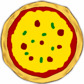 SCCN Pizza Factory SCCN Pizza Factory 是一个去中心化的应用程序，您可以在其中使用您的 SCCN 购买每秒生产比萨饼的工厂。然后，您可以将这些比萨饼卖回 dApp 直到您获利（如果您对 dApp 还不算太
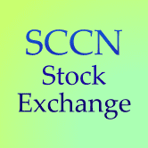 SCCN Stock Exchange 什么是 SCCN 证券交易所？ SCCN 证券交易所是一个高风险的去中心化应用程序，您可以在其中使用 SCCN 购买公司的假股票，SCCN 是 TRC20 标准下 Tron 区块链上的一种加密货
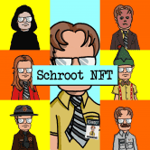 Schroot 任何人都给过我最好的建议：不要做白痴。 HODL 施鲁特。为什么？ Schroot 是一个 Alpha NFT 电钻。无情。贪得无厌。 Schroot NFT 是生活在区块链上的 8337 个 Schroot 的集合 那封电子邮件的内


 让你的角色更强大")